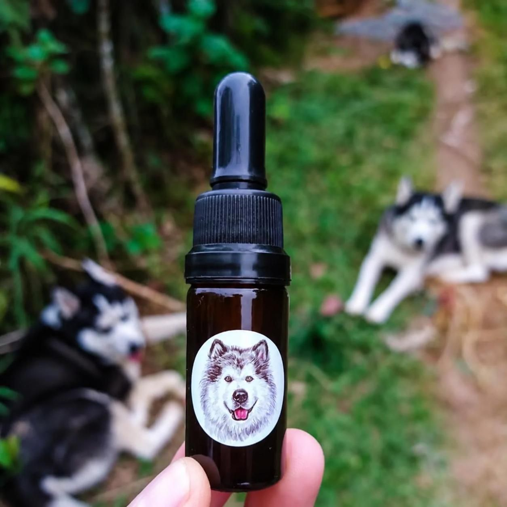

← Volver a productos

Aceites200mg / 10ml
Aceite de CBD para mascotas 200mg
$35.000 COP
Aceite de CBD para mascotas 200 mg, formulado con cáñamo de espectro completo y rico en cannabidiol natural. Ayuda a apoyar el bienestar diario de perros y gatos, brindando calma, equilibrio emocional y relajación, además de contribuir al confort físico en momentos de dolor. Una opción natural para acompañar la rutina de tu compañero y ayudarle a sentirse más tranquilo y aliviado.
Beneficios principales
- ✓Relajación y confort diario
- ✓Reduce ansiedad
- ✓Apoyo frente a molestias e incomodidad
🌿 Modo de uso
Administrar 3–6 gotas junto con la comida o directamente en la boca. Repartir en 1–3 tomas al día.
🔬 Certificado por lab. independiente🌱 Cáñamo 100% orgánico✅ THC < 0.2%
Aviso legal: Este producto es un suplemento de bienestar general y no está destinado a diagnosticar, tratar, curar ni prevenir ninguna enfermedad. Consulte a su veterinario antes de iniciar cualquier suplementación, especialmente si tu mascota está bajo tratamiento farmacológico o padece alguna condición de salud.